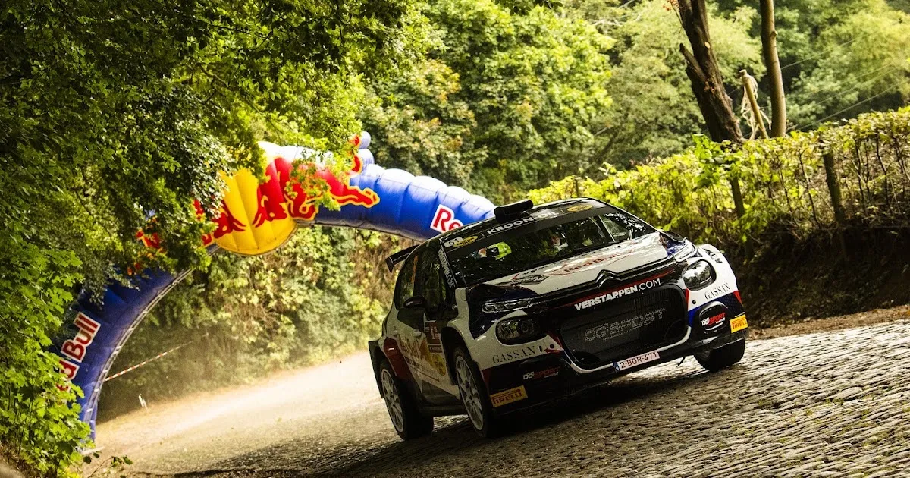
7 Circuit Racing Drivers who went Rallying
Jos Verstappen made headlines this week (for a good thing this time), when he announced that he would be competing in the second round of the British Rally Championship in Wales. The Dutchman, father of 3 times F1 World Champion Max Verstappen, is no stranger to the world of Rallying, as he has competed in the Belgian Rally Championship for the past 2 years. The former F1 driver finished 6th in the BRC last year, and even won the East Belgian Rally! The Dutchman has also competed in a WRC event, doing the Ypres Rally in a C3 R5 in 2022.
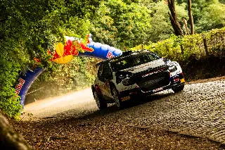
Jos Verstappen in the Ypres Rally 2022
(Jaanus Ree / Red Bull Content Pool)
That got us thinking, what other circuit racers have had a go in a Rally car?
So here are 7 circuit racing drivers who had a go at rallying!
1. Stephane Sarrazin
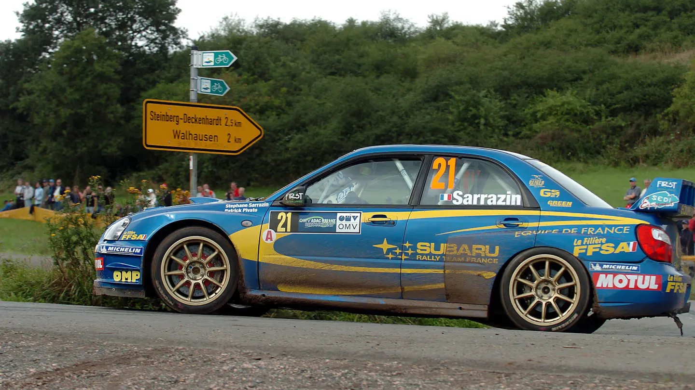
Stephane Sarrazin has driven in so many series, that it would be easier to name what series he has not raced in, rather than spending an hour talking about every racing discipline he has competed in. Sarrazin has also done his fair share of rallying, with his first notable outing being in the Rallye du Var in 2000. Sarrazin won the rally overall the next year in a Subaru WRC. After a 3 year break, Sarrazin competed in the French Tarmac championship, and won! The Frenchman won the championship in a Subaru WRC car, and also competed in 3 WRC events, in Germany, Catalunya and Corsica, finishing 9th, 6th and 4th!
Those eye catching performances led to the Subaru team giving him a part time seat for the 2005 WRC season, with Sarrazin sharing the second Impreza with Australian Chris Atkinson. As a side note, Sarrazin was chosen over fellow circuit racer Tomas Enge!
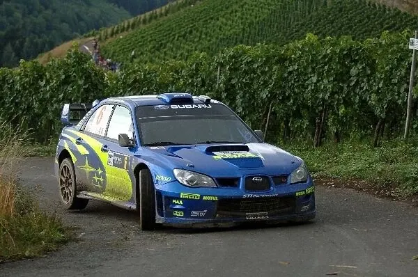
Sarrazin's time at Subaru didn't work out for either party, with the Frenchman scoring a best finish of 4th in Corsica in 2005, with that being only one of a handful of good performances he put in while driving a factory Subaru, with him ultimately being dropped from the team at the end of 2006.
But that wasn't the end of Sarrazin's rallying career. Sarrazin drove in the IRC and the ERC, with quite decent results. Sarrazin won in Corsica in 2014, and finished 3rd and 4th twice in Rally Monte Carlo from 2009 to 2011.
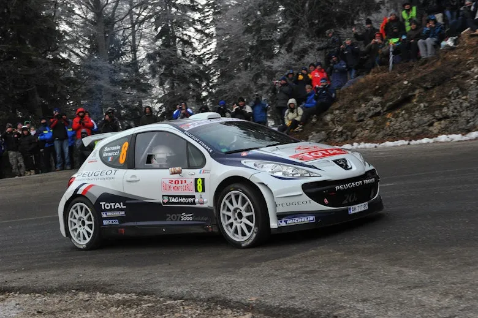
Sarrazin even competed in the odd WRC rally with different R5 cars, with his last being Catalunya in 2022. He still competes in regional rallies to this day, and he also heads Sarrazin Motorsport, that rents Rally2 and Rally4 cars to privateers!
2. Shane Van Gisbergen
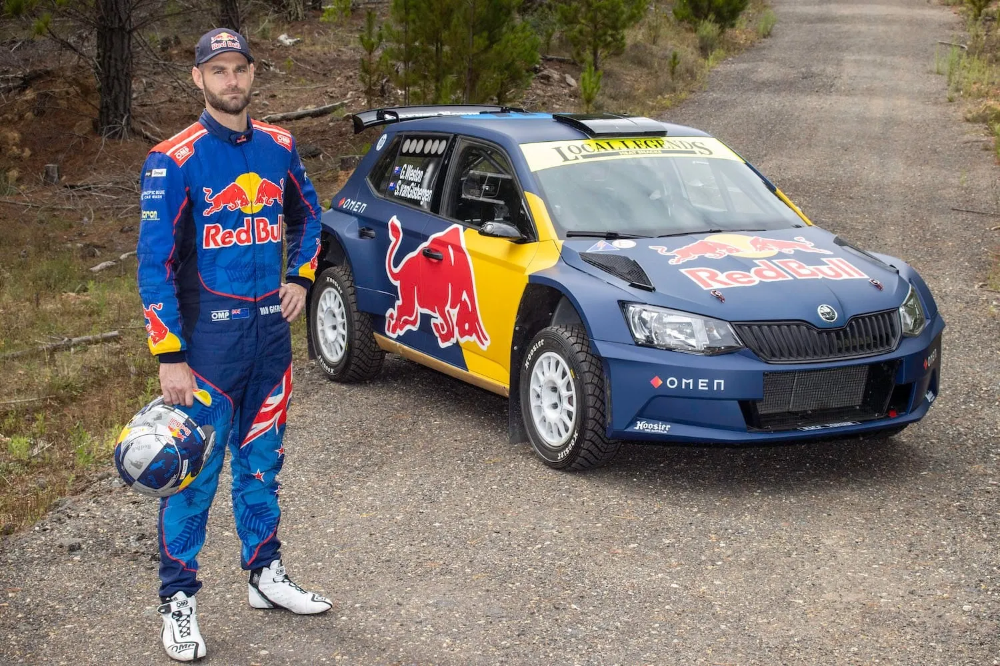
The 3 times Australian V8 Supercars champion, Bathurst 12 hour winner and current Nascar Xfinity Series driver only properly got into rallying in 2022, but he's still left his mark down under. SVG competed in a handful of rallies in the Australian and New Zealand rally championships in 2022, onboard a Skoda Fabia R5. The Kiwi showed promising pace, finishing 2nd in the Canberra Rally and won the Far North Rally. His most impressive performance came in Rally New Zealand, where SVG finished 9th overall and 3rd in WRC2! Van Gisbergen was only behind Hayden Paddon and WRC2 veteran Kajetan Kajetanowicz, and beat experienced Aussie, Harry Bates!
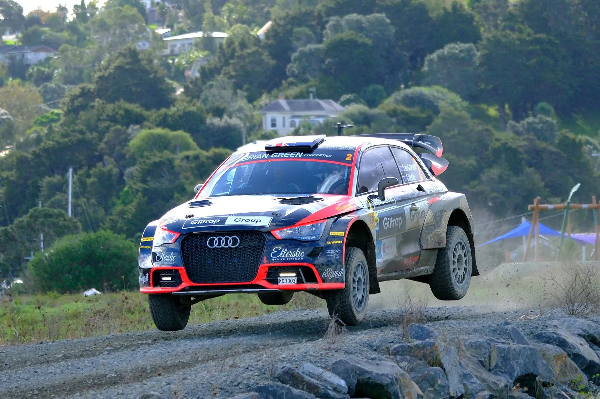
For 2023, Van Gisbergen did a partial campaign in the New Zealand championship, in an Audi S1 AP4. The Kiwi finished 2nd in 2 events, and finished the season in 8th.
3. Carlos Reutemann
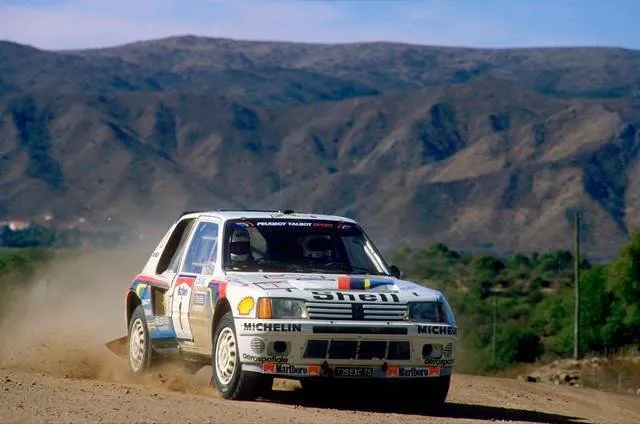
Carlos Reutemann only did 2 WRC rallies, but he got a podium in both of them! The 12 time F1 race winner competed in his home rally, Rally Argentina in 1980 and 1985, and finished 3rd in both rallies! Admittedly, Rally Argentina didn't have as much competition as any of the European rallies back in the day, but Reutemann did well to firstly keep it on the road, and to beat WRC regular Sekhar Mehta (who was admittedly in a slower car). But hey, the Argentine's 100% podium finish rate is a record that's unlikely to be broken any time soon.
4. Kimi Raikkonen
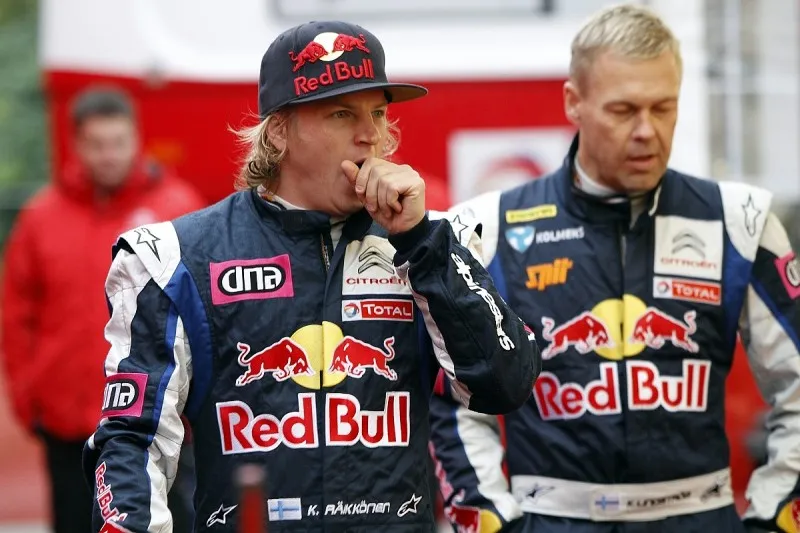
2007 F1 World Champion Kimi Raikkonen, might be the highest profile driver to feature in this seven. The Ice Man was dropped by Ferrari for Fernando Alonso at the end of 2009, with many speculating that Ferrari paid the Finn to sit out for the 2010 season. Raikkonen chose to take his talents to rally for 2010, signing with Citroen's junior team, alongside future 8 time World Champion, Seb Ogier. Raikkonen's time in the WRC, was... turbulent to say the least.
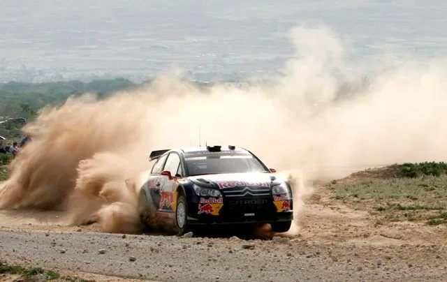
The Finn's rallying career got off to a tumultuous start, with Raikkonen scoring points in only 5 out of the 12 events he competed in that season, with his highest place finish being 5th in Rally Turkey. Raikkonen was crash prone, with all his non points finishes being due to offs. The lowlight to the Finn's 2010 season was when he crashed out of Rally Catalunya in the Pre Event Shakedown!
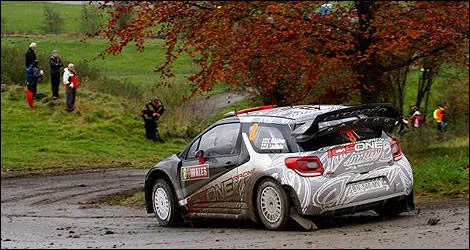
For 2011, Raikkonen competed in a privateer DS3 under his own team, ICE One Racing. It was a much better season for him, as he didn't crash out of an event once, and scored points in every rally he finished in! Raikkonen finished 6th twice, in Jordan and Germany, and finished 10th overall in the standings in a part time campaign. His constructors standings entry was disqualified from the standings for failing to compete in two fly-away rounds, as the Finn withdrew his entry for Rally Australia. For 2012, Raikkonen returned to F1 with Lotus, with whom he'd achieve 2 wins, before bowing out of F1 at the end of 2021, but not without achieving one last win in the 2018 US GP with Ferrari.
5. Romain Dumas
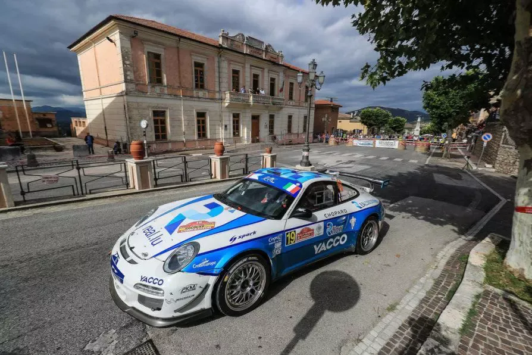
4 times Nurburgring 24h winner, 2 times 24h of Spa winner, 2 times 24h of Le Mans winner and 3 times Pikes Peak Hillclimb winner, Romain Dumas is a driver who is well known amongst Sportscar fans. However, he is a sort of cult hero amongst the RGT fans. Romain Dumas has actually done many rallies, almost all of them in a Porsche, and finished 2nd in the RGT Cup in 2015, and won the category in 2017!
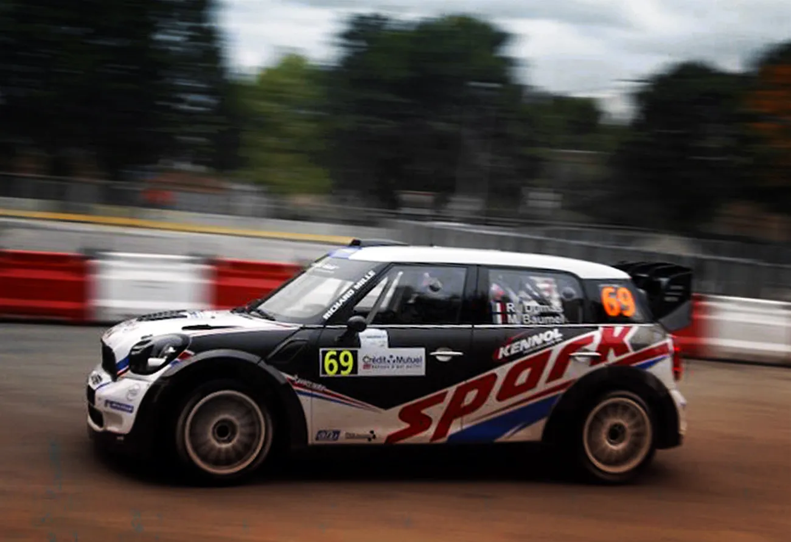
Dumas has also driven a WRC car twice, both times in Alsace. He did the event in a Mini in 2012, finishing 16th, and also did the event the following year, scoring a point in a Fiesta WRC. Dumas has also competed in ERC events in his Porsche RGT, and he has finished 5th in Corsica with it!
6. Yvan Muller
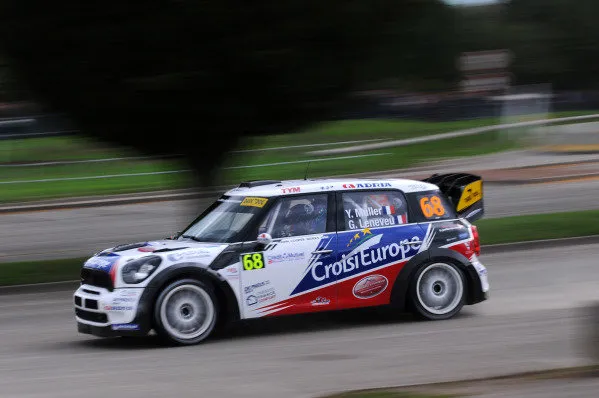
4 times WTCC and 2003 BTCC champion Yvan Muller has also had a short rallying career!
The Frenchman competed in the first three versions of Rallye Alsace in 3 different cars. In 2010 Muller used Petter Solberg's old Xsara, but his rally didn't go according to plan, with the experienced Frenchman retiring on the first day with mechanical problems. For 2011, Muller drove a Peugeot 207 S2000, but yet again his event was cut short on Day 1. His last WRC event came in 2012, when Muller drove a Prodrive ran Mini WRC car. This time Muller finished the rally without Super Rallying, but still outside the points, in 14th, 2 places ahead of fellow circuit racer Romain Dumas, who was also in a Mini.
7. Robert Kubica
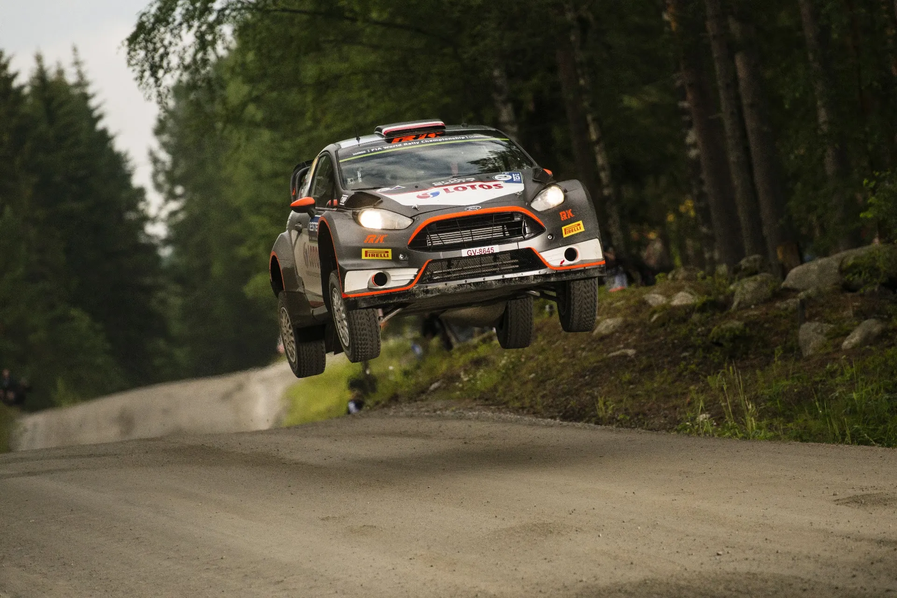
We end this list on a high note, with 1 time F1 winner and 2023 WEC LMP2 class champion, Robert Kubica. The Pole drove regional rallies in between F1 races starting from 2009, an activity that became more frequent for him in 2010, with Kubica also competing in the IRC, in Monte Carlo. Kubica's promising F1 career was cut short due to a severe crash in the
Ronde di Andora in the 2011 off-season, with the Pole nearly losing his arm.
Incredibly, Kubica returned on the stages the following year, and he even drove a C4 WRC in Rallye Du Var, an event that Kubica was leading, having won all the stages before he crashed.
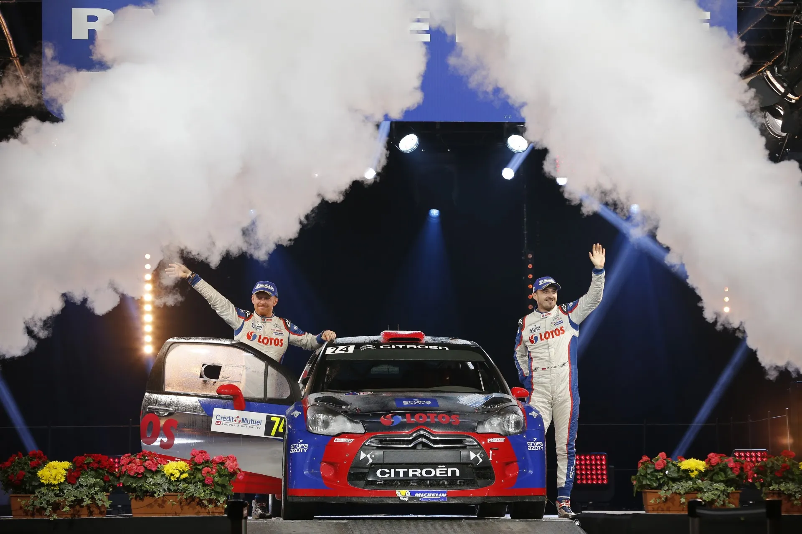
McKlein / Red Bull Content Pool
The following year, Kubica won the WRC2 championship in a DS3 RRC, winning 5 events in the process. The Polish star also competed in 3 ERC events. He led in Islas Canarias and Corsica, before retiring in both. For 2014, Kubica embarked on his first season in the top class in the WRC, driving a Fiesta RS WRC. Unfortunately, despite a promising Monte Carlo debut, Kubica only finished 3 rallies without Super Rallying, namely Argentina, Australia and Wales.
He was a lowly 16th in the standings, with 14 points to his name.
2015 was more of the same, with Kubica crashing a lot throughout the season.
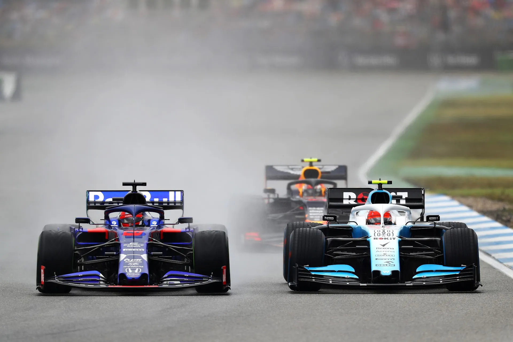
Getty Images / Red Bull Content Pool
The Pole called it quits on his WRC career after crashing out of the 2016 season opener, to focus on getting back to circuit racing. He succeeded, and even managed to return to F1 with Williams in 2019, and briefly with Alfa Romeo in 2021, replacing the ill Kimi Raikkonen. The Pole now races in WEC, driving a Ferrari 499P Hypercar for AF Corse.


Comments